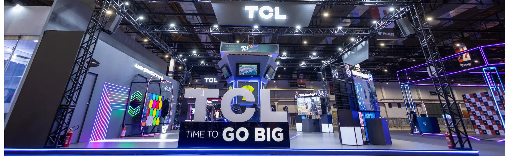

Spawn Point
Onde o universo dos games ganha vida
Prepare-se para entrar em um universo onde games, cultura geek e diversão se encontram! O Spawn Point é um evento criado para reunir fãs de jogos eletrônicos, animes, filmes, séries e tudo aquilo que faz parte da cultura nerd. Um espaço para compartilhar paixões, conhecer pessoas com os mesmos interesses, participar de atividades e viver experiências únicas.
Seja você um gamer competitivo, um fã de grandes sagas ou alguém que simplesmente ama esse universo, o Spawn Point é o lugar ideal para se conectar com a comunidade geek. Reúna seus amigos, prepare seus controles e venha fazer parte dessa aventura!
Sua próxima aventura começa aqui


Muito além de jogar
O Spawn Point foi pensado para proporcionar um ambiente de interação, entretenimento e descoberta. Os jogos eletrônicos vão além da tela: envolvem estratégia, criatividade, trabalho em equipe e desafios que podem ser compartilhados entre pessoas com diferentes experiências e interesses. O evento busca reunir esses elementos em um espaço onde o público possa aproveitar atividades variadas e conhecer novas formas de se conectar com esse universo.
O que você vai encontrar?
A proposta do Spawn Point é oferecer uma programação diversificada, com atividades que valorizam tanto a participação individual quanto a interação entre os visitantes. Entre as possibilidades estão partidas de jogos eletrônicos, desafios, competições amistosas e momentos de convivência, criando oportunidades para testar habilidades, aprender algo novo e compartilhar experiências.
Além dos jogos, o evento também abre espaço para outras formas de entretenimento ligadas ao universo dos games, como referências a personagens, histórias, produções audiovisuais e diferentes expressões artísticas. A intenção é proporcionar uma experiência que vá além de uma única atividade, permitindo que cada participante encontre algo de seu interesse.
Diversão, interação e novas experiências
Um evento também é construído pelas pessoas que participam dele. Por isso, o Spawn Point valoriza a convivência, a troca de conhecimentos e o respeito entre os visitantes. Seja para competir, acompanhar as atividades ou simplesmente aproveitar o ambiente, cada pessoa pode participar de acordo com seus próprios interesses.
A interação entre os participantes também permite descobrir novos jogos, trocar recomendações e conhecer diferentes perspectivas sobre atividades que fazem parte do cotidiano de muitas pessoas. Dessa forma, o encontro se torna uma oportunidade de lazer e de aproximação entre pessoas que compartilham interesses em comum.
Espaço para participar
O Spawn Point convida o público a sair da rotina e participar de uma experiência coletiva. Mais do que acompanhar uma programação, a proposta é aproveitar o momento, experimentar atividades e criar boas lembranças ao lado de outras pessoas.
Prepare-se para conhecer novas possibilidades, encarar desafios e aproveitar cada momento. Afinal, toda grande aventura começa com o primeiro passo, e o seu próximo ponto de partida pode ser aqui.